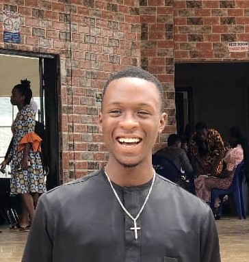

I am Chiemerie Emmanuel Chukwukere, a frontend web developer interested in technology, healthcare and building useful digital solutions. My goal is to combine my knowledge of healthcare with technology to create meaningful solutions in the future.
Student/Independent Learner 2024-present
Angela Yu - The Complete Full Stack Web Development Bootcamp